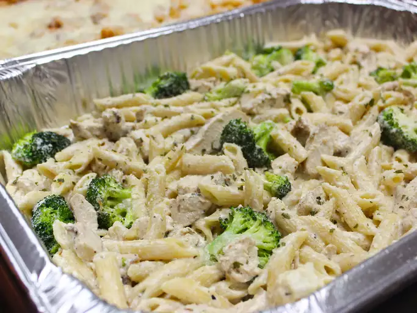

Chicken Alfredo

Description
This recipe will create baked chicken alfredo pasta using a recipe from AllRecipes.
Ingredients
- 1 (16 ounce) package penne pasta
- ½ cup butter
- 2 teaspoons minced garlic
- 1 (8 ounce) package cream cheese, softened
- 2 cups milk
- 6 ounces grated Parmesan cheese, divided
- 2 teaspoons dried parsley
- 1 teaspoon Italian seasoning
- 2 chicken breasts, patted dry
Steps
- 1. placeholder
- 2. placeholder